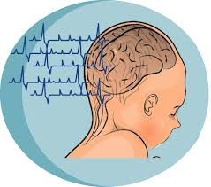
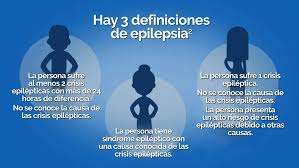

😉LA EPILEPSIA😉
La epilepsia es un trastorno del sistema nervioso central causado por una actividad eléctrica cerebral anormal y descontrolada, que provoca convulsiones recurrentes, manifestándose como movimientos involuntarios o alteraciones en la atención y conciencia. No es contagiosa, puede afectar a cualquier edad y tiene múltiples causas (genéticas, lesiones cerebrales, infecciones), aunque a veces no se encuentra una causa específica. El diagnóstico requiere al menos dos convulsiones no provocadas y el tratamiento, que puede incluir medicamentos, controla la condición en la mayoría de los casos.
- ¿Qué es una convulsión?
- Una convulsión es un episodio de actividad eléctrica repentina y desorganizada en las neuronas del cerebro.
- Puede afectar una parte del cerebro (convulsiones focales) o todo el cerebro (convulsiones generalizadas).
- Síntomas y tipos de convulsiones
- Movimientos, Espasmos musculares violentos, sacudidas rítmicas, o rigidez.
- Movimientos involuntarios: Sacudidas rítmicas (mioclónicas), rigidez corporal (tónicas), falta de tono muscular (atonic) o movimientos repetitivos como frotarse las manos o chasquear los labios.
- Alteraciones sensoriales, Percibir olores, luces o sonidos inusuales, o sensaciones extrañas.
- Desorganización eléctrica cerebral donde las alteraciones sensoriales (auras) funcionan como una señal de alerta crítica antes de la pérdida de conciencia. La prioridad absoluta durante un episodio es garantizar la seguridad física para evitar traumatismos por caídas y asegurar que la crisis no supere los 5 minutos, límite tras el cual se requiere atención médica de emergencia según la Sociedad Española de Neurología. En primeros auxilios, la acción clave es colocar a la persona en posición lateral de seguridad y jamás introducir objetos en su boca.
- Episodios breves (Ausencias), Mirada perdida por segundos, común en niños.
- Las ausencias (o pequeño mal) son crisis epilépticas breves que se manifiestan como una interrupción súbita de la actividad, donde el niño queda con la mirada fija y desconectado del entorno por apenas 5 a 15 segundos. Al ser episodios tan cortos y sin caídas ni convulsiones, a menudo se confunden con falta de atención o "soñar despierto", pero su característica clave es que el paciente no recuerda el evento y recupera la conciencia de forma inmediata. Para un diagnóstico preciso, la Clínica Universidad de Navarra recomienda realizar un electroencefalograma (EEG), ya que estas crisis pueden repetirse decenas de veces al día afectando el rendimiento escolar.
- Genética: Predisposición hereditaria.
- Lesiones cerebrales: Traumatismos craneales, accidentes cerebrovasculares (ACV).
- Infecciones: Meningitis, encefalitis.
- Problemas congénitos y anomalías cerebrales.
- En algunos casos: La causa sigue siendo desconocida.
